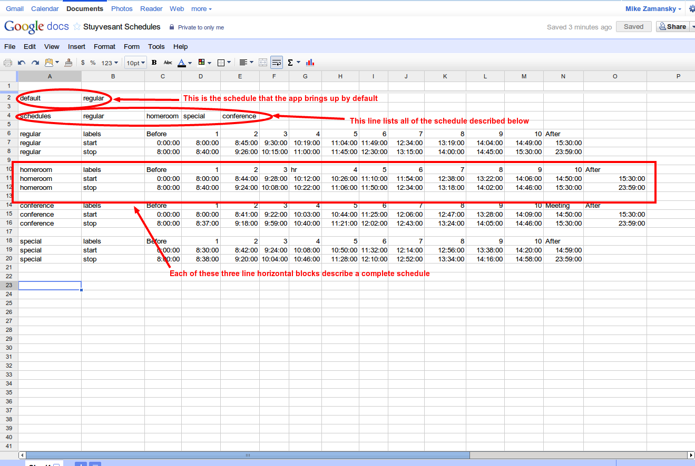

This web app displays a typical school schedule timer. To configure you must publish a Google Spreadsheet describing your possible school sechedules.
First create a spreadsheet in the following format

Note: labels are arbitrary strings, the time values are actual Google Spreadsheet time values and the start,stop, default and labels labels are case sensitive (that is they should be lower case).
Save the spreadsheet.
Click on share and publish the spreadsheet (select republish on changes).
Change the get a link option to "csv"
Copy the link supplied to this page and click update.
You can then select a default schedule below (or leave as web to use the spreadsheet default - note selecting a new schedule while viewing selects that schedule until either you change your selection or until the next day.